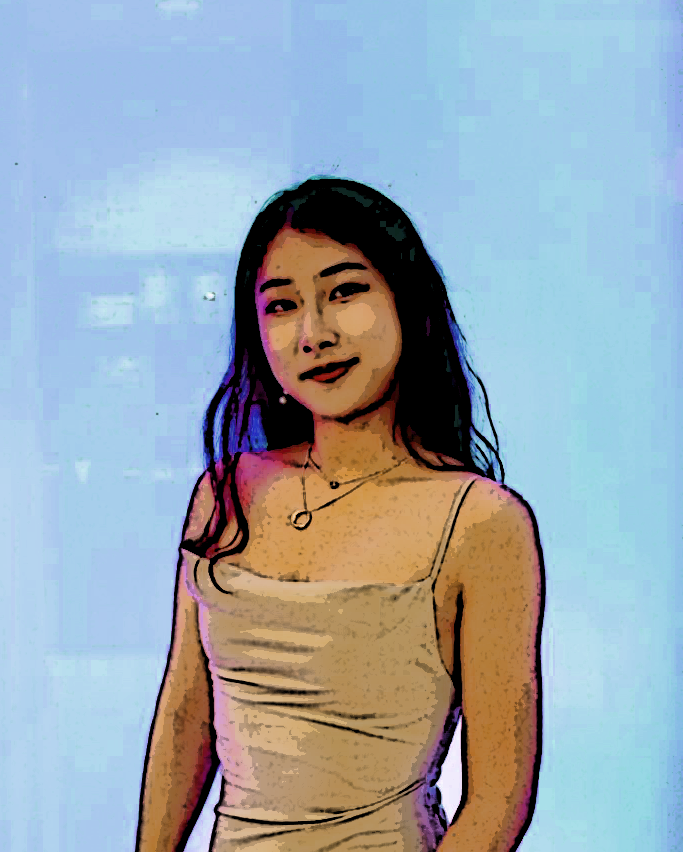

About Me
A student at WashU pursuing double majors in computer science and film,
I am a curious learner drawn to multiple disciplines of knowledge.
I am passionate about creating immersive experience through digital
media and technology, as well as utilizting computational methods
to help with biological and biomedical research.
I believe in the power of technology, art, and science to make
delightful changes to the world through interdisciplinary collaboration!
In my free time, I can be found playing with my camera, rowing, playing the violin, and eating ice cream.